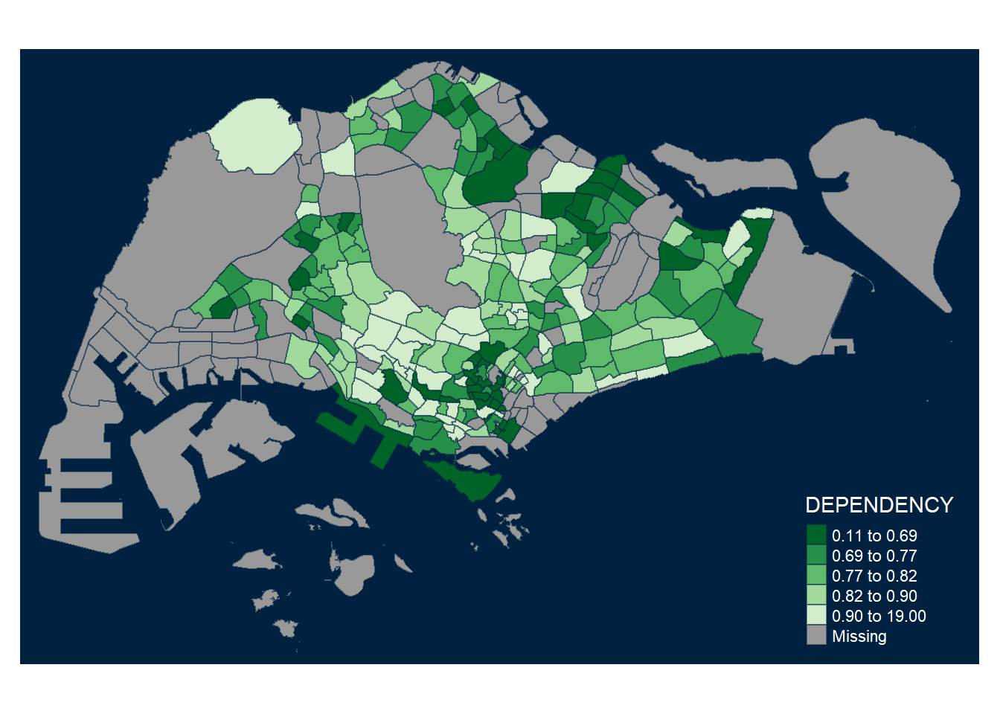

Warning: package 'dpylr' is not available for this version of R
A version of this package for your version of R might be available elsewhere,
see the ideas at
https://cran.r-project.org/doc/manuals/r-patched/R-admin.html#Installing-packages
Warning: unable to access index for repository http://www.stats.ox.ac.uk/pub/RWin/bin/windows/contrib/4.4:
cannot open URL 'http://www.stats.ox.ac.uk/pub/RWin/bin/windows/contrib/4.4/PACKAGES'
Warning: 'BiocManager' not available. Could not check Bioconductor.
Please use `install.packages('BiocManager')` and then retry.
Warning in p_install(package, character.only = TRUE, ...):
Warning in library(package, lib.loc = lib.loc, character.only = TRUE,
logical.return = TRUE, : there is no package called 'dpylr'
Warning in pacman::p_load(sf, tmap, tidyverse, dpylr): Failed to install/load:
dpylr
Reading layer `MP14_SUBZONE_WEB_PL' from data source
`D:\hoshihui\IS415-VAA\Hands-on_Ex\Hands-on_Ex01\data\geospatial'
using driver `ESRI Shapefile'
Simple feature collection with 323 features and 15 fields
Geometry type: MULTIPOLYGON
Dimension: XY
Bounding box: xmin: 2667.538 ymin: 15748.72 xmax: 56396.44 ymax: 50256.33
Projected CRS: SVY21
mpsz
Simple feature collection with 323 features and 15 fields
Geometry type: MULTIPOLYGON
Dimension: XY
Bounding box: xmin: 2667.538 ymin: 15748.72 xmax: 56396.44 ymax: 50256.33
Projected CRS: SVY21
First 10 features:
OBJECTID SUBZONE_NO SUBZONE_N SUBZONE_C CA_IND PLN_AREA_N
1 1 1 MARINA SOUTH MSSZ01 Y MARINA SOUTH
2 2 1 PEARL'S HILL OTSZ01 Y OUTRAM
3 3 3 BOAT QUAY SRSZ03 Y SINGAPORE RIVER
4 4 8 HENDERSON HILL BMSZ08 N BUKIT MERAH
5 5 3 REDHILL BMSZ03 N BUKIT MERAH
6 6 7 ALEXANDRA HILL BMSZ07 N BUKIT MERAH
7 7 9 BUKIT HO SWEE BMSZ09 N BUKIT MERAH
8 8 2 CLARKE QUAY SRSZ02 Y SINGAPORE RIVER
9 9 13 PASIR PANJANG 1 QTSZ13 N QUEENSTOWN
10 10 7 QUEENSWAY QTSZ07 N QUEENSTOWN
PLN_AREA_C REGION_N REGION_C INC_CRC FMEL_UPD_D X_ADDR
1 MS CENTRAL REGION CR 5ED7EB253F99252E 2014-12-05 31595.84
2 OT CENTRAL REGION CR 8C7149B9EB32EEFC 2014-12-05 28679.06
3 SR CENTRAL REGION CR C35FEFF02B13E0E5 2014-12-05 29654.96
4 BM CENTRAL REGION CR 3775D82C5DDBEFBD 2014-12-05 26782.83
5 BM CENTRAL REGION CR 85D9ABEF0A40678F 2014-12-05 26201.96
6 BM CENTRAL REGION CR 9D286521EF5E3B59 2014-12-05 25358.82
7 BM CENTRAL REGION CR 7839A8577144EFE2 2014-12-05 27680.06
8 SR CENTRAL REGION CR 48661DC0FBA09F7A 2014-12-05 29253.21
9 QT CENTRAL REGION CR 1F721290C421BFAB 2014-12-05 22077.34
10 QT CENTRAL REGION CR 3580D2AFFBEE914C 2014-12-05 24168.31
Y_ADDR SHAPE_Leng SHAPE_Area geometry
1 29220.19 5267.381 1630379.3 MULTIPOLYGON (((31495.56 30...
2 29782.05 3506.107 559816.2 MULTIPOLYGON (((29092.28 30...
3 29974.66 1740.926 160807.5 MULTIPOLYGON (((29932.33 29...
4 29933.77 3313.625 595428.9 MULTIPOLYGON (((27131.28 30...
5 30005.70 2825.594 387429.4 MULTIPOLYGON (((26451.03 30...
6 29991.38 4428.913 1030378.8 MULTIPOLYGON (((25899.7 297...
7 30230.86 3275.312 551732.0 MULTIPOLYGON (((27746.95 30...
8 30222.86 2208.619 290184.7 MULTIPOLYGON (((29351.26 29...
9 29893.78 6571.323 1084792.3 MULTIPOLYGON (((20996.49 30...
10 30104.18 3454.239 631644.3 MULTIPOLYGON (((24472.11 29...
Rows: 984656 Columns: 7
── Column specification ────────────────────────────────────────────────────────
Delimiter: ","
chr (5): PA, SZ, AG, Sex, TOD
dbl (2): Pop, Time
ℹ Use `spec()` to retrieve the full column specification for this data.
ℹ Specify the column types or set `show_col_types = FALSE` to quiet this message.
popdata
# A tibble: 984,656 × 7
PA SZ AG Sex TOD Pop Time
<chr> <chr> <chr> <chr> <chr> <dbl> <dbl>
1 Ang Mo Kio Ang Mo Kio Town Centre 0_to_4 Males HDB 1- and 2-Ro… 0 2011
2 Ang Mo Kio Ang Mo Kio Town Centre 0_to_4 Males HDB 3-Room Flats 10 2011
3 Ang Mo Kio Ang Mo Kio Town Centre 0_to_4 Males HDB 4-Room Flats 30 2011
4 Ang Mo Kio Ang Mo Kio Town Centre 0_to_4 Males HDB 5-Room and … 50 2011
5 Ang Mo Kio Ang Mo Kio Town Centre 0_to_4 Males HUDC Flats (exc… 0 2011
6 Ang Mo Kio Ang Mo Kio Town Centre 0_to_4 Males Landed Properti… 0 2011
7 Ang Mo Kio Ang Mo Kio Town Centre 0_to_4 Males Condominiums an… 40 2011
8 Ang Mo Kio Ang Mo Kio Town Centre 0_to_4 Males Others 0 2011
9 Ang Mo Kio Ang Mo Kio Town Centre 0_to_4 Females HDB 1- and 2-Ro… 0 2011
10 Ang Mo Kio Ang Mo Kio Town Centre 0_to_4 Females HDB 3-Room Flats 10 2011
# ℹ 984,646 more rows
`summarise()` has grouped output by 'PA', 'SZ'. You can override using the
`.groups` argument.
#this code has error because we are not summing up the right itemspopdata2020
# A tibble: 332 × 7
PA SZ YOUNG `ECONOMY ACTIVE` AGED TOTAL DEPENDENCY
<chr> <chr> <dbl> <dbl> <dbl> <dbl> <dbl>
1 Ang Mo Kio Ang Mo Kio Town Cen… 1440 2610 760 4810 0.843
2 Ang Mo Kio Cheng San 6640 15460 6050 28150 0.821
3 Ang Mo Kio Chong Boon 6150 13950 6470 26570 0.905
4 Ang Mo Kio Kebun Bahru 5540 12090 5120 22750 0.882
5 Ang Mo Kio Sembawang Hills 2100 3410 1310 6820 1
6 Ang Mo Kio Shangri-La 3960 8420 3610 15990 0.899
7 Ang Mo Kio Tagore 2220 4200 1530 7950 0.893
8 Ang Mo Kio Townsville 4690 11450 5100 21240 0.855
9 Ang Mo Kio Yio Chu Kang 0 0 0 0 NaN
10 Ang Mo Kio Yio Chu Kang East 1220 2300 750 4270 0.857
# ℹ 322 more rows
#group_by: group the three column of daa together and each unique combination will be a separate group#summarise: create a new column#ungroup: remove the grouping so new operations applied to entire dataset#pivot_wider(names_from = AG, values from = POP): reshapes data from long format to wide format. unique values in AG column become new column names and corresponding values from POP column are filled in these new column#mutate(YOUNG = rowSums(.[3:6])): create new column called young with and sum the values#select: select particular column for the final output
2.2.2.1 Joining attribute data and geospatial data
# A tibble: 234 × 7
PA SZ YOUNG `ECONOMY ACTIVE` AGED TOTAL DEPENDENCY
<chr> <chr> <dbl> <dbl> <dbl> <dbl> <dbl>
1 ANG MO KIO ANG MO KIO TOWN CEN… 1440 2610 760 4810 0.843
2 ANG MO KIO CHENG SAN 6640 15460 6050 28150 0.821
3 ANG MO KIO CHONG BOON 6150 13950 6470 26570 0.905
4 ANG MO KIO KEBUN BAHRU 5540 12090 5120 22750 0.882
5 ANG MO KIO SEMBAWANG HILLS 2100 3410 1310 6820 1
6 ANG MO KIO SHANGRI-LA 3960 8420 3610 15990 0.899
7 ANG MO KIO TAGORE 2220 4200 1530 7950 0.893
8 ANG MO KIO TOWNSVILLE 4690 11450 5100 21240 0.855
9 ANG MO KIO YIO CHU KANG EAST 1220 2300 750 4270 0.857
10 ANG MO KIO YIO CHU KANG WEST 6590 12850 4680 24120 0.877
# ℹ 224 more rows
#mutate_at: transformation to specific column#.vars = vars(): specifies which column you want to modify#.funs = list(): specifies functions you want to apply to those columnsmpsz_pop2020 <-left_join(mpsz, popdata2020, by =c("SUBZONE_N"="SZ"))mpsz_pop2020
Simple feature collection with 323 features and 21 fields
Geometry type: MULTIPOLYGON
Dimension: XY
Bounding box: xmin: 2667.538 ymin: 15748.72 xmax: 56396.44 ymax: 50256.33
Projected CRS: SVY21
First 10 features:
OBJECTID SUBZONE_NO SUBZONE_N SUBZONE_C CA_IND PLN_AREA_N
1 1 1 MARINA SOUTH MSSZ01 Y MARINA SOUTH
2 2 1 PEARL'S HILL OTSZ01 Y OUTRAM
3 3 3 BOAT QUAY SRSZ03 Y SINGAPORE RIVER
4 4 8 HENDERSON HILL BMSZ08 N BUKIT MERAH
5 5 3 REDHILL BMSZ03 N BUKIT MERAH
6 6 7 ALEXANDRA HILL BMSZ07 N BUKIT MERAH
7 7 9 BUKIT HO SWEE BMSZ09 N BUKIT MERAH
8 8 2 CLARKE QUAY SRSZ02 Y SINGAPORE RIVER
9 9 13 PASIR PANJANG 1 QTSZ13 N QUEENSTOWN
10 10 7 QUEENSWAY QTSZ07 N QUEENSTOWN
PLN_AREA_C REGION_N REGION_C INC_CRC FMEL_UPD_D X_ADDR
1 MS CENTRAL REGION CR 5ED7EB253F99252E 2014-12-05 31595.84
2 OT CENTRAL REGION CR 8C7149B9EB32EEFC 2014-12-05 28679.06
3 SR CENTRAL REGION CR C35FEFF02B13E0E5 2014-12-05 29654.96
4 BM CENTRAL REGION CR 3775D82C5DDBEFBD 2014-12-05 26782.83
5 BM CENTRAL REGION CR 85D9ABEF0A40678F 2014-12-05 26201.96
6 BM CENTRAL REGION CR 9D286521EF5E3B59 2014-12-05 25358.82
7 BM CENTRAL REGION CR 7839A8577144EFE2 2014-12-05 27680.06
8 SR CENTRAL REGION CR 48661DC0FBA09F7A 2014-12-05 29253.21
9 QT CENTRAL REGION CR 1F721290C421BFAB 2014-12-05 22077.34
10 QT CENTRAL REGION CR 3580D2AFFBEE914C 2014-12-05 24168.31
Y_ADDR SHAPE_Leng SHAPE_Area PA YOUNG ECONOMY ACTIVE AGED
1 29220.19 5267.381 1630379.3 <NA> NA NA NA
2 29782.05 3506.107 559816.2 OUTRAM 1200 2860 2120
3 29974.66 1740.926 160807.5 SINGAPORE RIVER 0 40 10
4 29933.77 3313.625 595428.9 BUKIT MERAH 3150 6900 3320
5 30005.70 2825.594 387429.4 BUKIT MERAH 2900 6020 1740
6 29991.38 4428.913 1030378.8 BUKIT MERAH 3340 6800 3420
7 30230.86 3275.312 551732.0 BUKIT MERAH 3130 7700 3610
8 30222.86 2208.619 290184.7 SINGAPORE RIVER 0 50 10
9 29893.78 6571.323 1084792.3 QUEENSTOWN 1290 2600 610
10 30104.18 3454.239 631644.3 QUEENSTOWN 50 140 60
TOTAL DEPENDENCY geometry
1 NA NA MULTIPOLYGON (((31495.56 30...
2 6180 1.1608392 MULTIPOLYGON (((29092.28 30...
3 50 0.2500000 MULTIPOLYGON (((29932.33 29...
4 13370 0.9376812 MULTIPOLYGON (((27131.28 30...
5 10660 0.7707641 MULTIPOLYGON (((26451.03 30...
6 13560 0.9941176 MULTIPOLYGON (((25899.7 297...
7 14440 0.8753247 MULTIPOLYGON (((27746.95 30...
8 60 0.2000000 MULTIPOLYGON (((29351.26 29...
9 4500 0.7307692 MULTIPOLYGON (((20996.49 30...
10 250 0.7857143 MULTIPOLYGON (((24472.11 29...
#left-join: merging two data sets but comparing on mpsz datawrite_rds(mpsz_pop2020, "D:/hoshihui/IS415-VAA/Hands-on_Ex/Hands-on_Ex01/data/respopagesextod2011to2020.csv")#create a new file
2.3 Choropleth Mapping Geospatial Data using tmap
2.3.1 Plotting a choropleth map using qtm
tmap_mode("plot") #static map because of plot
tmap mode set to plotting
qtm(mpsz_pop2020, fill ="DEPENDENCY") #to map the attribute with the legends
#cannot customise anymore
##2.3.2 Creating choropleth map using tmap’s elements
tm_shape(mpsz_pop2020)+tm_fill("DEPENDENCY", style ="quantile", palette ="Blues",title ="Dependency ratio") +tm_layout(main.title ="Distribution of Dependency Ratio by planning subzone",main.title.position ="center",main.title.size =1.2,legend.height =0.45, legend.width =0.35,frame =TRUE) +tm_borders(alpha =0.5) +tm_compass(type="8star", size =2) +tm_scale_bar() +tm_grid(alpha =0.2) +tm_credits("Source: Planning Sub-zone boundary from Urban Redevelopment Authorithy (URA)\n and Population data from Department of Statistics DOS", position =c("left", "bottom"))
#tm_compass: specify type of compass#tm_scale_bar: adds a scale bar to the map
2.3.2.1 Drawing base map
tm_shape(mpsz_pop2020) +tm_polygons() #can customise by adding borders legends etc
tm_shape(mpsz_pop2020) +tm_polygons("DEPENDENCY")
tm_shape(mpsz_pop2020) +tm_fill("DEPENDENCY") #without the borders
#lwd = line width#alpha = control transparency level of the border, 0 mean transparent, 1 means opaque#other arguments for tm_borders is col = border colour, lty: border line type
2.3.3 Data classification methods of tmap
#Plotting choropleth maps with built in classificationtm_shape(mpsz_pop2020)+tm_fill("DEPENDENCY",n =5,style ="jenks") +tm_borders(alpha =0.5)
#n represent the number of bins means categories the legend should show#style: specifies method for dividing the data. quantile means divide so each category has equal data points. equal divide into 5 equal width interval. jenks are based on natural groupings, grouping similar values together
DIY: Using what you had learned, prepare choropleth maps by using different classification methods supported by tmap and compare their differences. - jenks would be better as it shows the results better where it will classify the group based on minimal variance where there it shows which area has a balance of non-economically active people and economically active - quantile results might not be accurate because it just group according to equal number of people in the class which does not tell much - equal only have equal bin/range which will show that most of the areas or boundaries have dependency ratio within a certain range and identify anomalies where the non economically active people is greater than the economically active
DIY: Preparing choropleth maps by using similar classification method but with different numbers of classes (i.e. 2, 6, 10, 20). Compare the output maps, what observation can you draw? - using the same classification method but different classes will make the map have more variation in colour as there will greater ranges due to more classes. it will show more specfic data ranges.
2.3.3.1 Plotting choropleth map with custom break
summary(mpsz_pop2020$DEPENDENCY)
Min. 1st Qu. Median Mean 3rd Qu. Max. NA's
0.1111 0.7147 0.7866 0.8585 0.8763 19.0000 92
other available styles are: "white", "gray", "natural", "col_blind", "albatross", "beaver", "bw", "classic", "watercolor"

2.3.5.3 Cartographic Furniture
#drawing other furnitures like compasstm_shape(mpsz_pop2020)+tm_fill("DEPENDENCY", style ="quantile", palette ="Blues",title ="No. of persons") +tm_layout(main.title ="Distribution of Dependency Ratio \nby planning subzone",main.title.position ="center",main.title.size =1.2,legend.height =0.45, legend.width =0.35,frame =TRUE) +tm_borders(alpha =0.5) +tm_compass(type="8star", size =2) +tm_scale_bar(width =0.15) +tm_grid(lwd =0.1, alpha =0.2) +tm_credits("Source: Planning Sub-zone boundary from Urban Redevelopment Authorithy (URA)\n and Population data from Department of Statistics DOS", position =c("left", "bottom"))
2.3.6 Drawing Small Multiple Choropleth Maps
2.3.6.1 Assigning multiple values to at least one of the aesthetic arguments
Warning in pre_process_gt(x, interactive = interactive, orig_crs =
gm$shape.orig_crs): legend.width controls the width of the legend within a map.
Please use legend.outside.size to control the width of the outside legend
#to specify the data you want to use in mpsz_pop2020